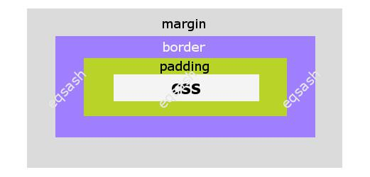
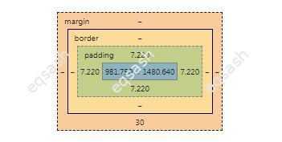

Как сделать отступ вокруг элемента, разница между margin и padding, тег br

При верстке страниц сайта элементы размещаются в определенном порядке, делаются отступы между ними, как вертикальные, так и горизонтальные. Отступы можно сделать разными способами, наиболее часто используются CSS свойства margin и padding. Какая разница между этими свойствами? Ответ будет дан ниже.
Кроме вышеназванных свойств CSS, отступы можно делать другими средствами, все зависит от выбранного позиционирования. Например, при абсолютном позиционировании можно использовать свойства top, right, bottom, left. При обычном позиционировании элементов применяются свойства margin и padding.
Свойства margin:
- margin-top,
- margin-right,
- margin-bottom,
- margin-left.
Свойства padding:
- padding-top,
- padding-right,
- padding-bottom,
- padding-left.
Как видно выше, margin и padding – это просто сокращенные названия свойств, можно сразу указать в таких свойствах все значения отступов через запятую для каждой стороны, а не писать по отдельности. Например, посмотрите на записи ниже – первая запись подробная, вторая запись сокращенная. Какую использовать, решать разработчику.
Какая разница между margin и padding? Свойство margin служит для создания внешнего отступа, то есть отступы будут делаться от элемента. А свойство padding создает внутренние отступы, то есть содержимое элемента будет удаленно от его внутренних границ на указанные значения.
Часто можно увидеть, что для вертикальных отступов используется тег br. Это является ошибкой, так как этот тег предназначен для переноса строк текста, а не для верстки страниц сайта. Вместо этого тега следует прописать стили у нужного элемента и задать свойство margin-top или margin-bottom – в результате будут сделаны нужные отступы от элемента.
В консоли браузера, можно легко наглядно увидеть, какие отступы заданы для выбранного элемента. Для этого необходимо выбрать элемент и в колонке консоли, где перечислены CSS свойства элемента, пролистать вниз, обычно там есть изображение с отступами вокруг элемента. Там можно увидеть все отступы, включая отступы, созданные свойством border.

Таким образом, важно правильно использовать CSS свойства для задания отступов вокруг элемента. Для упрощения процесса разработки можно воспользоваться специальными средствами, которые покажут существующие значения всех отступов.